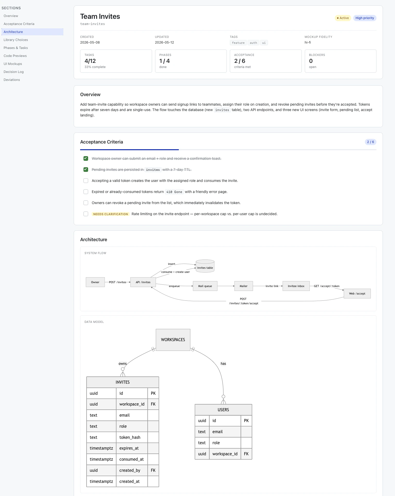
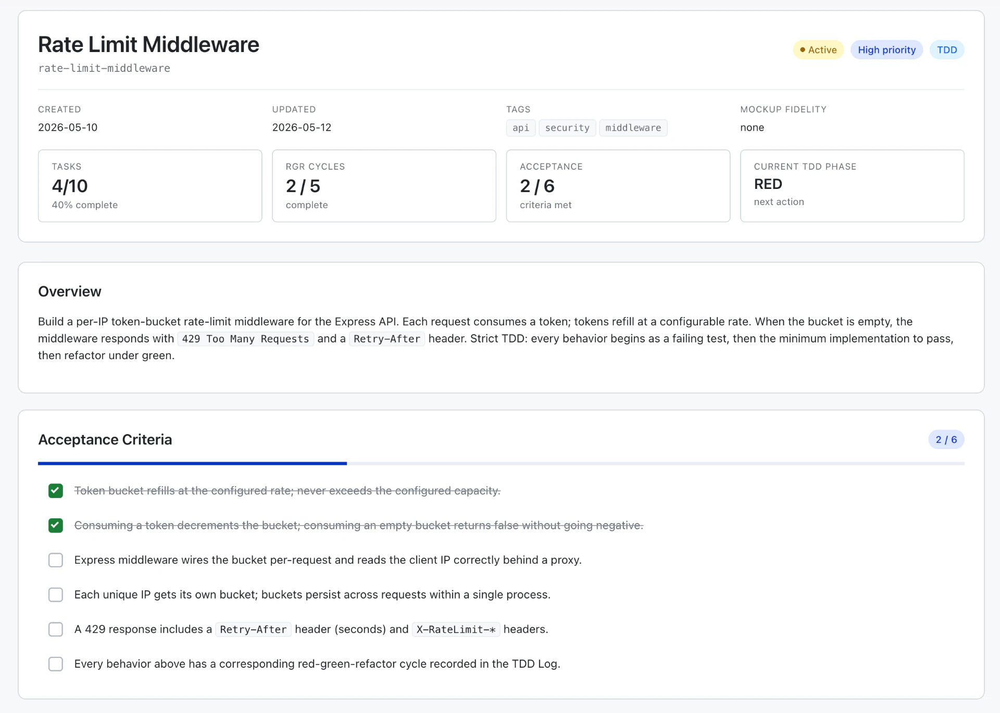

AI Coding Specs Should Be HTML — Karpathy and Anthropic Agree
By Gabriel Voicu,
Also published on Medium.
Specmint Core HTML and Specmint TDD HTML turn ephemeral plan-mode output into rich, browsable specs — Mermaid architecture diagrams, syntax-highlighted code diffs, real UI mockups, and (for TDD) a full red-green-refactor audit trail.
Something quietly shifted in May 2026. On May 8, Thariq Shihipar — an engineer on Anthropic's Claude Code team — published "The Unreasonable Effectiveness of HTML". Within 48 hours it had 750,000 views on X, 30,000 bookmarks, and a sustained discussion thread on Hacker News. His core admission cut hard:
"I tend to not actually read more than a 100-line markdown file, and I certainly am not able to get anyone else in my organization to read it."
A few days later, Andrej Karpathy reached the same conclusion independently:
"This works really well btw, at the end of your query ask your LLM to 'structure your response as HTML', then view the generated file in your browser."
He framed it in cognitive terms: audio is humans' preferred input to AI; vision is the preferred output from it. "Around a third of our brains are massively parallel processors dedicated to vision. It's the ten-lane superhighway of information into the brain." Markdown gives you bold, italic, headers, lists. The other nine lanes sit empty.
The conclusion from both camps was the same: for outputs you're going to read — implementation plans, code reviews, design systems, spec documents — HTML beats markdown by a margin so large it's strange it took this long to notice.
This article is about applying that conclusion specifically to coding specs, through two open-source skills: Specmint Core HTML and Specmint TDD HTML.
Why Specs Are the Hardest Case
A one-shot HTML artifact is easy. Karpathy's tip works perfectly for a self-contained explainer, a small tool, a single-page report. You generate, you read, you throw it away.
A spec is different. A spec has to survive. It gets updated across multiple sessions, tracks which tasks are done, accrues a decision log. It needs to be editable by an AI agent six weeks from now without re-rendering the whole document and losing your progress.
That's the legitimate objection raised in the Hacker News thread on Thariq's post: "by gravitating to HTML you lose the ability for a human (you!) to easily co-author the document with the LLM." Markdown is hand-editable. HTML is not, unless you build it that way.
This is the gap Specmint fills. It's HTML-first for the reasons Karpathy and Anthropic identify — but designed so AI agents can edit it surgically, without humans ever needing to touch the markup.
What a Specmint HTML Spec Looks Like
The output of the forge workflow — triggered by natural language like "create a spec for X" in any supported tool — is a single SPEC.html file in .specs/<spec-id>/. Open it in a browser:

That's a real "Team Invites" spec. The header card carries a live scorecard (Tasks 4/12, Phases 1/4, Acceptance 2/6); numbers are derived at render time from data-status attributes, so one swap propagates everywhere. Architecture diagrams render as Mermaid — flowcharts, sequence, ER, state — with no CDN; the runtime ships with the spec. Code previews are PrismJS diff-highlight blocks: red/green line backgrounds with language-aware highlighting underneath, not screenshots. UI mockups land as bespoke wireframe primitives or hi-fi components on a constrained palette so the AI can't bikeshed colors. Phases and tasks collapse cleanly; the decision log and deviations table track the "why" of every choice.
This is the artifact Thariq describes when he says HTML lets you build "implementation plans with embedded mockups and code snippets." The difference between this and a markdown spec isn't decorative. It's the difference between a document you skim and a document you actually use.
How Specmint Stays Editable
Specmint's SPEC.html isn't free-form HTML. It's a strict template with three properties that make it AI-editable without humans ever opening the file.
Region sentinels. Every top-level section is bracketed by HTML comments: <!-- region:tasks --> … <!-- endregion:tasks -->. The AI uses these as anchors for surgical edits — flipping data-status="pending" to data-status="completed" on a single task, never re-rendering the page. Recent versions even author the spec region by region instead of one shot.
Edit recipes. Specmint ships a references/edit-recipes.md with before/after snippets for every common operation: complete a task, transition a phase, append to the decision log. The AI matches a recipe, doesn't improvise.
A post-edit validator. A short Python check verifies every region sentinel has a matching close, the spec-meta JSON parses, and data-status values stay within the allowed set. Catches drift before it compounds.
The result: humans get the rendered artifact; agents get a clean surface to manipulate. The HN objection evaporates because humans don't co-edit. They read.
The TDD Variant
Specmint TDD HTML is the same idea with a stricter contract: every feature task is split into a TEST task and an IMPL task, and the IMPL can't start until its TEST is written and observed to fail.


Same rendering primitives as Core HTML, plus three TDD-specific things. A Testing Architecture section — framework, isolation strategy, coverage targets, test commands, anti-patterns — populated by a dedicated test-infrastructure research pass that reads your existing config rather than inventing a strategy. Paired TEST-IMPL task cards with codes like [TEST-AUTH-01] and [IMPL-AUTH-02], each IMPL ending in → satisfies [TEST-AUTH-01] so the linkage is visible. And a TDD Log rendered as RGR swimlanes — three lanes (RED / GREEN / REFACTOR) with the actual monospace test output captured in each. Skim it next week and you can see exactly when each cycle started red, when it went green, what the refactor changed.
The blocking rule is per-task and unforgiving: the implement workflow runs your test command via Bash at every transition. No "tests would pass" hand-waving.
Spec Tokens Are the Cheapest Tokens You'll Ever Spend
The standard objection to HTML specs is that they cost more tokens. They do — roughly 3x in our measurements. The objection is also irrelevant, and not because tokens are cheap (they are, but that's the small reason).
The real reason: the most expensive tokens in any AI coding workflow are the ones you spend rebuilding work the agent got wrong — and a rendered spec is the cheapest place in the pipeline to catch that.
A human reading a markdown spec sees a wall of bullets. The visual cortex — the ten-lane superhighway — barely engages. You skim. You nod. The agent goes off and builds. Three hours later, you discover its mental model of "Phase 3: data flow" doesn't match yours, because nobody drew the diagram. Now you're paying for wrong code, a re-planning turn, and a refactor back to where you should have started.
A rendered spec catches the same misunderstanding in seconds. An arrow on the architecture diagram points somewhere obviously wrong. The mockup shows a button you didn't ask for. The ER diagram has a relationship that breaks your data model. You point at the picture, the agent corrects the spec, implementation starts from the right place. One fixed misunderstanding at the spec stage pays for ten verbose specs.
Humans visualize. A diagram parses in parallel; a bulleted list parses serially through working memory. The 3x token premium on the spec disappears against a single fix-turn saved downstream.
Karpathy's own LLM Wiki reflects the same split — markdown for storage (greppable, token-cheap), HTML for outputs meant to be read. Specmint sits exactly on this seam: research notes and interview notes stay markdown; the spec itself is rendered.
Better Research Pairs with a Brain
The forge workflow's research phase reads your codebase and searches the web. That covers what's written down. It doesn't cover what isn't — the architecture decision you made in a Slack thread six months ago, the vendor quirk that bit you last quarter, the test isolation pattern your team agreed to but never documented.
Kluris fills that half. It's a git-backed knowledge brain your AI agent can query alongside the codebase. Pair it with Specmint and the research phase consults the brain before asking you. The spec lands grounded in code and in the decisions your team already made — no re-litigating what was settled in October.
Installation
Specmint is a skill, not a plugin — there are no slash commands to memorize. You drive every workflow with natural language: "create a spec for OAuth", "resume", "pause and save context". It works across six tools: Claude Code, Cursor, Windsurf, Cline, Codex, and Gemini CLI.
Install the Core HTML variant with a single command:
npx skills add ngvoicu/specmint-core-html -g
# then: "create a spec for adding OAuth sign-in with GitHub"For TDD, swap specmint-core-html for specmint-tdd-html:
npx skills add ngvoicu/specmint-tdd-html -gThe TDD variant adds the Testing Architecture section, alternating TEST-IMPL task pairs, and an implement workflow that enforces red-green-refactor per pair.
Either way, the .specs/ directory is the same shape across tools. Start a TDD spec in Claude Code on Friday, finish it in Cursor on Monday.
The Bigger Picture
Karpathy sketched the progression: "raw text, then markdown, then HTML, and eventually interactive neural video." AI coding tools spent the last two years stuck on markdown because context windows were small and tokens were precious. Both constraints are gone. The Claude Code team noticed. Karpathy noticed. The artifacts your AI produces should be artifacts you want to read — and specs, more than anything else, are the artifacts you come back to.
Both skills are MIT-licensed:
- Specmint Core HTML — github.com/ngvoicu/specmint-core-html
- Specmint TDD HTML — github.com/ngvoicu/specmint-tdd-html
- Live gallery — specmint.ngvoicu.dev/#gallery renders both exemplar specs in your browser. Those are the exact files the forge workflow produces.
Specmint is created by Gabriel Voicu and is available as an open-source AI coding skill.
Further reading: